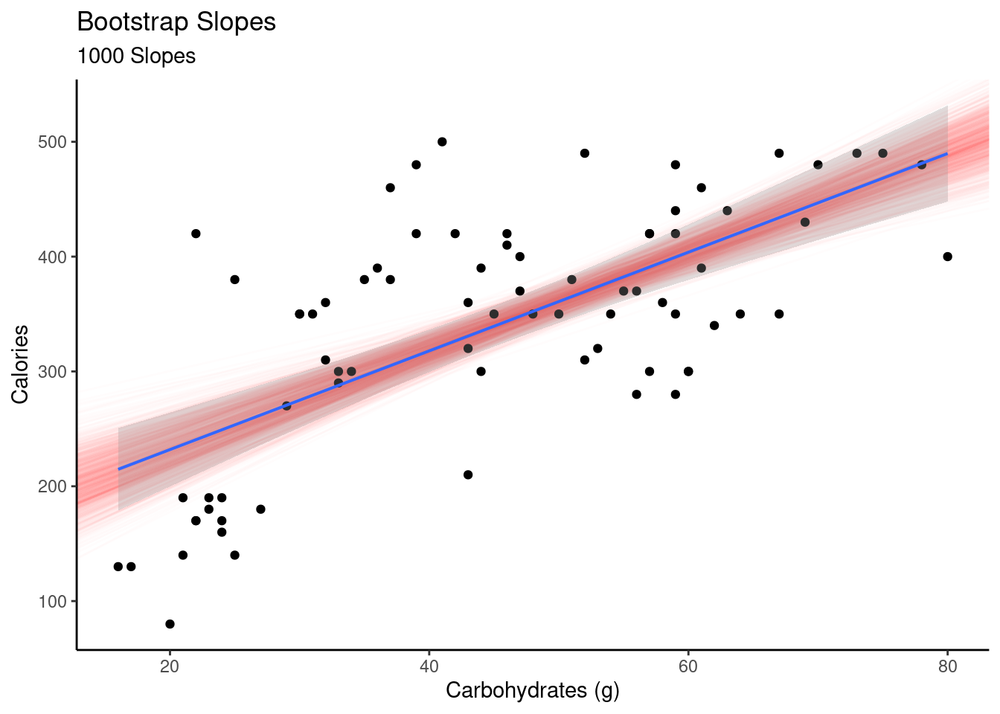
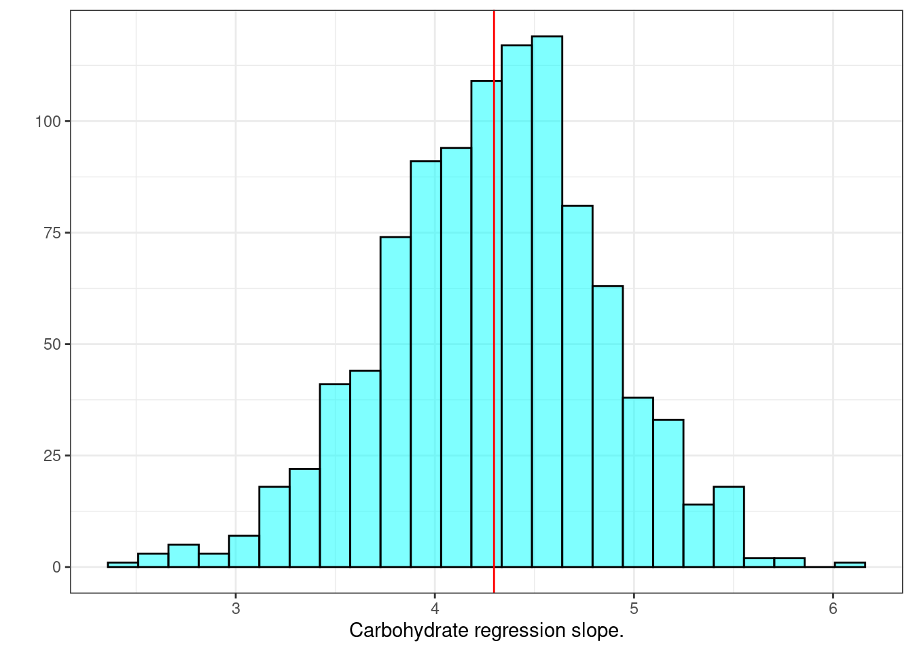
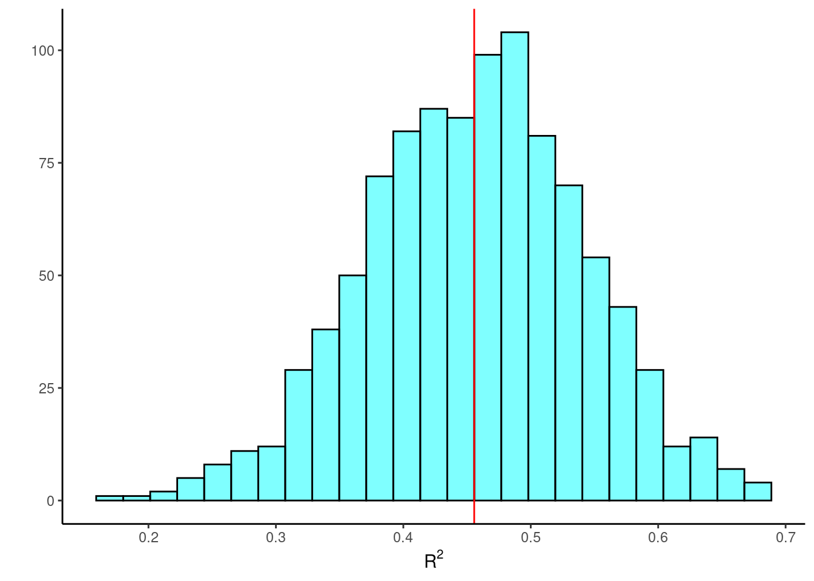
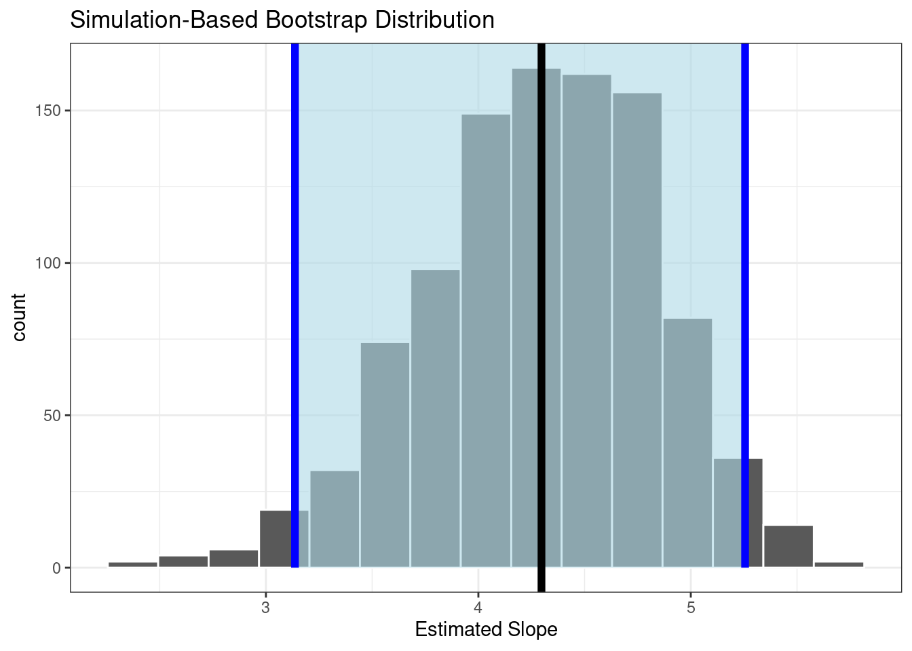
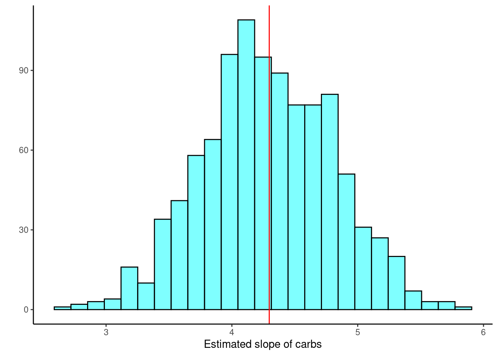
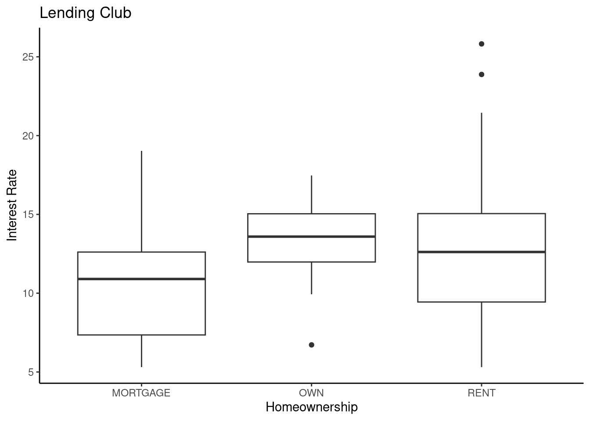
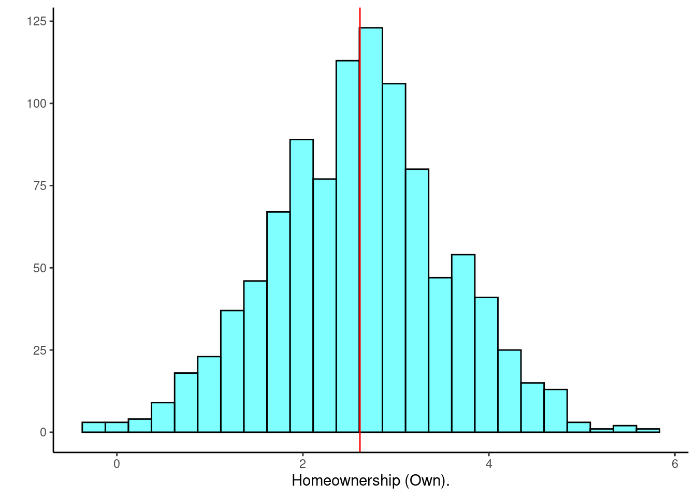
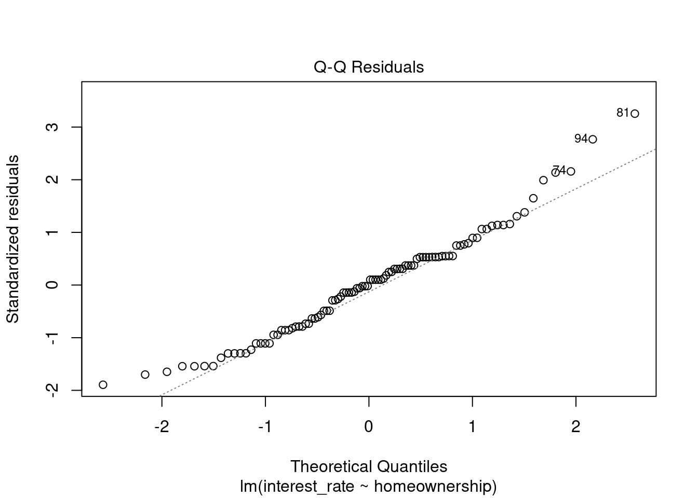
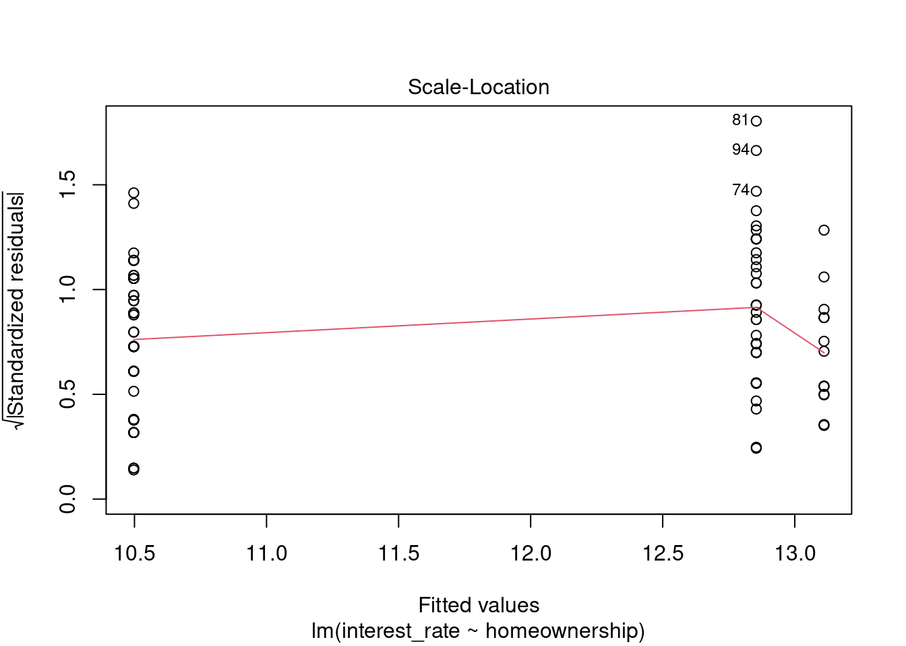
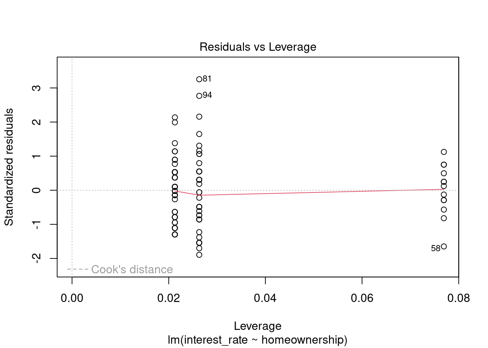

starbucks <- read_csv("data/starbucks.csv")31 Simulation-Based Linear Regression
31.1 Objectives
Apply the bootstrap to generate and interpret confidence intervals and estimates of standard error for parameter estimates in a linear regression model.
Apply the bootstrap to generate and interpret confidence intervals for predicted values from a linear regression model.
Generate bootstrap samples using two methods: sampling rows of the data and sampling residuals. Justify why you might prefer one method over the other.
Generate and interpret regression coefficients in a linear regression model with categorical explanatory variables.
31.2 Introduction
In the last couple of chapters we examined how to perform inference for a simple linear regression model assuming the errors were independent normally distributed random variables. We examined diagnostic tools to check assumptions and look for outliers. In this chapter we will use the bootstrap to create confidence and prediction intervals.
There are at least two ways we can consider creating a bootstrap distribution for a linear model. We can easily fit a linear model to a resampled data set. But in some situations this may have undesirable features. Influential observations, for example, will appear duplicated in some resamples and be missing entirely from other resamples.
Another option is to use “residual resampling”. In residual resampling, the new data set has all of the predictor values from the original data set and a new response is created by adding to the fitted function a resampled residual.
In summary, suppose we have \(n\) observations, each with \(Y\) and some number of \(X\)’s, with each observation stored as a row in a data set. The two basic procedures when bootstrapping regression are:
a. bootstrap observations, and
b. bootstrap residuals.
The latter is a special case of a more general rule: sample \(Y\) from its estimated conditional distribution given \(X\).
In bootstrapping observations, we sample with replacement from the rows of the data; each \(Y\) comes with the corresponding \(X\)’s. In any bootstrap sample some observations may be repeated multiple times, and others not included. This is the same idea we used before when we used the bootstrap for hypothesis testing.
In bootstrapping residuals, we fit the regression model, compute predicted values \(\hat{Y}_i\) and residuals \(e_i = Y_i - \hat{Y}_i\), then create a bootstrap sample using the same \(X\) values as in the original data, but with new \(Y\) values obtained using the prediction plus a random residual, \(Y^{*}_i = \hat{Y}_i + e^{*}_i\), where the residuals \(e^{*}_i\) are sampled randomly with replacement from the original residuals. We still have the chance of selecting a large residual from an outlier, but if it paired with an \(x\) value near \(\bar{x}\), it will have little leverage.
Bootstrapping residuals corresponds to a designed experiment, where the \(x\) values are fixed and only \(Y\) is random. If we bootstrap observations, then essentially both \(X\) and \(Y\) are sampled. By the principle of sampling the way the data were drawn, the second method implies that both \(Y\) and \(X\) are random.
31.3 Confidence intervals for parameters
To build a confidence interval for the slope parameter, we will resample the data or residuals and generate a new regression model. This process does not assume normality of the residuals. We will use functions from the mosaic package to complete this work. However, know that tidymodels and purrr are more sophisticated tools for doing this work.
31.3.1 Resampling
To make this ideas more salient, let’s use the Starbucks example again.
First read the data into R:
Build the model:
star_mod <- lm(calories~carb,data=starbucks)Let’s see the output of the model:
summary(star_mod)
Call:
lm(formula = calories ~ carb, data = starbucks)
Residuals:
Min 1Q Median 3Q Max
-151.962 -70.556 -0.636 54.908 179.444
Coefficients:
Estimate Std. Error t value Pr(>|t|)
(Intercept) 146.0204 25.9186 5.634 2.93e-07 ***
carb 4.2971 0.5424 7.923 1.67e-11 ***
---
Signif. codes: 0 '***' 0.001 '**' 0.01 '*' 0.05 '.' 0.1 ' ' 1
Residual standard error: 78.26 on 75 degrees of freedom
Multiple R-squared: 0.4556, Adjusted R-squared: 0.4484
F-statistic: 62.77 on 1 and 75 DF, p-value: 1.673e-11In preparation for resampling, let’s see how do() treats a linear model object.
set.seed(401)
obs<-do(1)*star_mod
obs Intercept carb sigma r.squared F numdf dendf .row .index
1 146.0204 4.297084 78.25956 0.4556237 62.77234 1 75 1 1Nice. To resample the data we use do() with resample(). This will sample the rows, what we were referring to above as the first method.
do(2)*lm(calories~carb,data=resample(starbucks)) Intercept carb sigma r.squared F numdf dendf .row .index
1 145.6345 4.089065 73.32243 0.4980692 74.42299 1 75 1 1
2 160.0193 3.828742 66.81016 0.4298148 56.53621 1 75 1 2Perfect, we are ready to scale up.
set.seed(532)
results <- do(1000)*lm(calories~carb,data=resample(starbucks))Now let’s look at the first 6 rows of results.
head(results) Intercept carb sigma r.squared F numdf dendf .row .index
1 154.7670 4.176327 78.94717 0.4127581 52.71568 1 75 1 1
2 166.8589 3.807697 72.09482 0.4032196 50.67437 1 75 1 2
3 105.3658 4.899956 77.62517 0.5310212 84.92195 1 75 1 3
4 227.4138 2.805156 79.97902 0.2467094 24.56317 1 75 1 4
5 194.9190 3.457191 83.74624 0.2670279 27.32313 1 75 1 5
6 183.1159 3.549460 73.90153 0.3931691 48.59292 1 75 1 6If we plot all the slopes, the red lines in Figure 31.1, we get a sense of the variability in the estimated slope and intercept. This also gives us an idea of the width of the confidence interval on the estimated mean response. We plotted the confidence interval in a gray shade and we can see it matches the red shaded region of the bootstrap slopes. We can see that the confidence interval will be wider at the extreme values of the predictor.
ggplot(starbucks, aes(x=carb, y=calories)) +
geom_abline(data = results,
aes(slope = carb, intercept = Intercept),
alpha = 0.01,color="red") +
geom_point() +
theme_classic() +
labs(x="Carbohydrates (g)",y="Calories",title="Bootstrap Slopes",subtitle ="1000 Slopes") +
geom_lm(interval="confidence")

With all this data in results, we can generate confidence intervals for the slope, \(R\)-squared (\(R^2\)), and the \(F\) statistic. Figure 31.2 is a histogram of slope values from resampling.
results %>%
gf_histogram(~carb,fill="cyan",color = "black") %>%
gf_vline(xintercept = obs$carb,color="red") %>%
gf_theme(theme_bw()) %>%
gf_labs(x="Carbohydrate regression slope.",y="")

The confidence interval is found using cdata().
cdata(~carb,data=results,p=0.95) lower upper central.p
2.5% 3.166546 5.377743 0.95We are 95% confident that the true slope is between 3.17 and 5.37. As a reminder, using the normality assumption we had a 95% confidence interval of \((3.21,5.38)\):
confint(star_mod) 2.5 % 97.5 %
(Intercept) 94.387896 197.652967
carb 3.216643 5.377526The bootstrap confidence interval for \(R^2\) is:
cdata(~r.squared,data=results) lower upper central.p
2.5% 0.2837033 0.6234751 0.95And the bootstrap sampling distribution of \(R^2\) is displayed in Figure 31.3.
results %>%
gf_histogram(~r.squared,fill="cyan",color="black") %>%
gf_vline(xintercept = obs$r.squared,color="red") %>%
gf_theme(theme_classic()) %>%
gf_labs(y="",x=expression(R^2))

This is nice work. So powerful.
Let’s see how we could accomplish this same work using the infer package.
library(infer)To check that we can use this package, let’s find the slope estimate.
slope_estimate <- starbucks %>%
specify(calories ~ carb) %>%
calculate(stat="slope")slope_estimateResponse: calories (numeric)
Explanatory: carb (numeric)
# A tibble: 1 × 1
stat
<dbl>
1 4.30Good, let’s get the bootstrap sampling distribution of the regression slope.
results2 <- starbucks %>%
specify(calories~carb) %>%
generate(reps=1000,type="bootstrap") %>%
calculate(stat="slope")
head(results2)Response: calories (numeric)
Explanatory: carb (numeric)
# A tibble: 6 × 2
replicate stat
<int> <dbl>
1 1 3.75
2 2 5.43
3 3 3.76
4 4 4.69
5 5 4.38
6 6 3.63Next the confidence interval.
slope_ci<-results2 %>%
get_confidence_interval(level=0.95)
slope_ci# A tibble: 1 × 2
lower_ci upper_ci
<dbl> <dbl>
1 3.14 5.26This matches the work we have already done. Finally, let’s visualize the results, Figure 31.4.
results2 %>%
visualize() +
shade_confidence_interval(slope_ci,color="blue",fill="lightblue") +
geom_vline(xintercept = slope_estimate$stat,color="black",size=2) +
labs(x="Estimated Slope") +
theme_bw()

31.3.2 Resample residuals
We could also resample the residuals instead of the data. This makes a stronger assumption that the linear model is appropriate. However, it guarantees that every \(X\) value is in the resampled data frame. In the lm function, we send the model instead of the data to resample the residuals. Since R is an object oriented programming language, in sending a model object to the resample() function, the code automatically resamples from the residuals.
results_resid <- do(1000)*lm( calories~carb, data = resample(star_mod)) # resampled residuals
head(results_resid) Intercept carb sigma r.squared F numdf dendf .row .index
1 151.9999 4.356740 73.07024 0.4967052 74.01804 1 75 1 1
2 101.6226 5.280410 82.24346 0.5336627 85.82779 1 75 1 2
3 152.4453 4.346918 82.64249 0.4344055 57.60383 1 75 1 3
4 159.1311 3.846912 84.42784 0.3656236 43.22634 1 75 1 4
5 167.9957 3.981328 67.50240 0.4912807 72.42905 1 75 1 5
6 198.5458 3.239953 86.11143 0.2821237 29.47482 1 75 1 6Next a plot of the bootstrap sampling distribution, Figure 31.5.
results_resid %>%
gf_histogram(~carb,fill="cyan",color="black") %>%
gf_vline(xintercept = obs$carb,color="red") %>%
gf_theme(theme_classic()) %>%
gf_labs(x="Estimated slope of carbs",y="")

And finally the confidence interval for the slope.
cdata(~carb,data=results_resid) lower upper central.p
2.5% 3.24622 5.323031 0.95Similar to the previous bootstrap confidence interval just a little narrower.
31.4 Confidence intervals for prediction
We now want to generate a confidence interval for the average calories from 60 grams of carbohydrates.
Using the normal assumption, we had
predict(star_mod,newdata = data.frame(carb=60),interval="confidence") fit lwr upr
1 403.8455 379.7027 427.9883We have all the bootstrap slope and intercept estimates in the results object. We can use tidyverse functions to find the confidence interval by predicting the response for each of these slope and intercept estimate.
head(results) Intercept carb sigma r.squared F numdf dendf .row .index
1 154.7670 4.176327 78.94717 0.4127581 52.71568 1 75 1 1
2 166.8589 3.807697 72.09482 0.4032196 50.67437 1 75 1 2
3 105.3658 4.899956 77.62517 0.5310212 84.92195 1 75 1 3
4 227.4138 2.805156 79.97902 0.2467094 24.56317 1 75 1 4
5 194.9190 3.457191 83.74624 0.2670279 27.32313 1 75 1 5
6 183.1159 3.549460 73.90153 0.3931691 48.59292 1 75 1 6results %>%
mutate(pred=Intercept+carb*60) %>%
cdata(~pred,data=.) lower upper central.p
2.5% 385.2706 423.6689 0.95This is similar to the interval we found last chapter. We are 95% confident that the average calorie content for a menu item with 60 grams of carbohydrates is between 380.8 and 425.7.
31.4.1 Prediction interval
The prediction interval is more difficult to perform with a bootstrap. We would have to account for the variability of the slope but also the residual variability since this is an individual observation. We can’t just add the residual to the predicted value. Remember the variance of a sum of independent variables is the sum of the variances. But here we have standard deviations and we can’t just add them.
Let’s look at what would happen if we try. First as a reminder, the prediction interval at 60 grams of carb using the assumption of normally distributed errors from last chapter is:
predict(star_mod,newdata = data.frame(carb=60),interval="prediction") fit lwr upr
1 403.8455 246.0862 561.6048If we are generating a bootstrap of size 1000, we will resample from the residuals 1000 times.
results %>%
mutate(pred=Intercept+carb*60) %>%
cbind(resid=sample(star_mod$residuals,size=1000,replace = TRUE)) %>%
mutate(pred_ind=pred+resid) %>%
cdata(~pred_ind,data=.) lower upper central.p
2.5% 277.4886 577.0957 0.95This prediction interval appears to be biased. Thus generating a prediction interval is beyond the scope of this book.
31.5 Categorical predictor
We want to finish up simple linear regression by discussing a categorical predictor. It somewhat changes the interpretation of the regression model.
Thus far, we have only discussed regression in the context of a quantitative, continuous, response AND a quantitative, continuous, predictor. We can build linear models with categorical predictor variables as well.
In the case of a binary covariate, nothing about the linear model changes. The two levels of the binary covariate are typically coded as 1 and 0, and the model is built, evaluated and interpreted in an analogous fashion as before. The difference between the continuous predictor and categorical is that there are only two values the predictor can take and the regression model will simply predict the average value of the response within each value of the predictor.
In the case of a categorical covariate with \(k\) levels, where \(k>2\), we need to include \(k-1\) dummy variables in the model. Each of these dummy variables takes the value 0 or 1. For example, if a covariate has \(k=3\) categories or levels (say A, B or C), we create two dummy variables, \(X_1\) and \(X_2\), each of which can only take values 1 or 0. We arbitrarily state that if \(X_1=1\), it represents the covariate has the value A. Likewise if \(X_2=1\), then we state that the covariate takes the value B. If both \(X_1=0\) and \(X_2=0\), this is known as the reference category, and in this case the covariate takes the value C. The arrangement of the levels of the categorical covariate are arbitrary and can be adjusted by the user. This coding of the covariate into dummy variables is called contrasts and again is typically taught in a more advanced course on linear models.
In the case \(k=3\), the linear model is \(Y=\beta_0 + \beta_1X_1 + \beta_2X_2+e\).
When the covariate takes the value A, \(\mbox{E}(Y|X=A)=\beta_0 + \beta_1\).
When the covariate takes the value B, \(\mbox{E}(Y|X=B)=\beta_0 + \beta_2\).
When the covariate takes the value C, \(\mbox{E}(Y|X=C)=\beta_0\).
Based on this, think about how you would interpret the coefficients \(\beta_0\), \(\beta_1\), and \(\beta_2\).
31.5.1 Lending Club
Let’s do an example with some data.
The Lending Club data set represents thousands of loans made through the Lending Club platform, which is a platform that allows individuals to lend to other individuals. Of course, not all loans are created equal. Someone who is essentially a sure bet to pay back a loan will have an easier time getting a loan with a low interest rate than someone who appears to be riskier. And for people who are very risky? They may not even get a loan offer, or they may not have accepted the loan offer due to a high interest rate. It is important to keep that last part in mind, since this data set only represents loans actually made, i.e. do not mistake this data for loan applications! The data set is loans.csv from the data folder.
loans <- read_csv("data/loans.csv")Let’s look at the size of the data:
dim(loans)[1] 10000 55This is a big data set. For educational purposes, we will sample 100 points from the original data. We only need the variables interest_rate and homeownership. First let’s break down the homeownership variable.
tally(~homeownership,data=loans,format="proportion")homeownership
MORTGAGE OWN RENT
0.4789 0.1353 0.3858 We want to sample the data so that each level of home ownership has the same proportion as the original, a stratified sample.
set.seed(905)
loans100 <- loans %>%
select(interest_rate,homeownership) %>%
mutate(homeownership=factor(homeownership)) %>%
group_by(homeownership) %>%
slice_sample(prop=0.01) %>%
ungroup()dim(loans100)[1] 98 2Not quite a 100 observations, but we preserved the proportion of homeownership.
tally(~homeownership,data=loans100,format="proportion")homeownership
MORTGAGE OWN RENT
0.4795918 0.1326531 0.3877551 Let’s look at the data with a boxplot, Figure 31.6.
loans100 %>%
gf_boxplot(interest_rate~homeownership) %>%
gf_theme(theme_classic()) %>%
gf_labs(title="Lending Club",x="Homeownership",y="Interest Rate")

It appears that there is some evidence that home ownership impacts the interest rate. We can build a linear model to explore whether this difference in significant. We can use the lm() function in R, but in order to include a categorical predictor, we need to make sure that variable is stored as a “factor” type. If it is not, we’ll need to convert it.
str(loans100)tibble [98 × 2] (S3: tbl_df/tbl/data.frame)
$ interest_rate: num [1:98] 19.03 9.44 6.07 7.96 10.9 ...
$ homeownership: Factor w/ 3 levels "MORTGAGE","OWN",..: 1 1 1 1 1 1 1 1 1 1 ...Now we can build the model:
loan_mod<-lm(interest_rate ~ homeownership,data=loans100)
summary(loan_mod)
Call:
lm(formula = interest_rate ~ homeownership, data = loans100)
Residuals:
Min 1Q Median 3Q Max
-7.5442 -3.1472 0.1628 2.1228 12.9658
Coefficients:
Estimate Std. Error t value Pr(>|t|)
(Intercept) 10.4972 0.5889 17.825 < 2e-16 ***
homeownershipOWN 2.6135 1.2652 2.066 0.04158 *
homeownershipRENT 2.3570 0.8808 2.676 0.00878 **
---
Signif. codes: 0 '***' 0.001 '**' 0.01 '*' 0.05 '.' 0.1 ' ' 1
Residual standard error: 4.037 on 95 degrees of freedom
Multiple R-squared: 0.08517, Adjusted R-squared: 0.06591
F-statistic: 4.422 on 2 and 95 DF, p-value: 0.01458Note that by default, R set the MORTGAGE level as the reference category. This is because it is first value when sorted alphabetically. You can control this by changing the order of the factor levels. The package forcats helps with this effort.
How would we interpret this output? Since MORTGAGE is the reference category, the intercept is effectively the estimated, average, interest rate for home owners with a mortgage.
loans100 %>%
filter(homeownership == "MORTGAGE") %>%
summarise(average=mean(interest_rate))# A tibble: 1 × 1
average
<dbl>
1 10.5The other terms represent the expected difference in average interest rates for the ownership types.
loans100 %>%
group_by(homeownership) %>%
summarise(average=mean(interest_rate),std_dev=sd(interest_rate))# A tibble: 3 × 3
homeownership average std_dev
<fct> <dbl> <dbl>
1 MORTGAGE 10.5 3.44
2 OWN 13.1 2.89
3 RENT 12.9 4.94Specifically, on average, loan interest rates for home owners who own their home is 2.61 percentage points higher than those with a mortgage. Those who rent is 2.36 percent higher on average. The highest interest rate is for those who own their own home. This seems odd but it is interesting.
Exercise:
Using the coefficient from the regression model, how do we find the difference in average interest rates between home owners and renters?
The first coefficient \[\beta_\text{homeownershipOWN} = \mu_\text{OWN} - \mu_\text{MORTGAGE}\]
and \[\beta_\text{homeownershipRENT} = \mu_\text{RENT} - \mu_\text{MORTGAGE}.\] Thus \[\mu_\text{OWN} -\mu_\text{RENT} = \beta_\text{homeownershipOWN} - \beta_\text{homeownershipRENT},\] the difference in coefficients.
The model is not fitting a line to the data but just estimating average with the coefficients representing difference from the reference level.
The Std.Error, t value, and Pr(>|t|) values can be used to conduct inference about the respective estimates. Both \(p\)-values are significant. This is similar to the ANOVA analysis we conducted last block except that hypothesis test was simultaneously testing all coefficients and here we are testing them pairwise.
31.5.2 Bootstrap
From the boxplots, the biggest difference in means is between home owners and those with a mortgage. However, in the regression output there is no \(p\)-value to test the difference between owners and renters. An easy solution would be to change the reference level but what if you had many levels? How would you know which ones to test? In the next section we will look at multiple comparisons but before then we can use the bootstrap to help us.
Let’s bootstrap the regression.
set.seed(532)
results <- do(1000)*lm(interest_rate ~ homeownership,data=resample(loans100))head(results) Intercept homeownershipOWN homeownershipRENT sigma r.squared F
1 9.98300 2.088250 2.110000 3.832758 0.07223701 3.698421
2 11.04875 3.868250 1.449750 3.421090 0.11065485 5.910085
3 10.52865 3.200096 2.065557 3.958047 0.08231134 4.260474
4 11.10000 2.572000 2.163000 4.752496 0.05494338 2.761539
5 10.52939 2.459703 1.214033 4.157461 0.03970813 1.964128
6 10.08280 4.100533 2.531745 3.650730 0.16435823 9.342539
numdf dendf .row .index
1 2 95 1 1
2 2 95 1 2
3 2 95 1 3
4 2 95 1 4
5 2 95 1 5
6 2 95 1 6We of course can generate a confidence interval on either of the coefficients in the results object.
obs<-do(1)*loan_mod
obs Intercept homeownershipOWN homeownershipRENT sigma r.squared F
1 10.49723 2.613535 2.356976 4.037396 0.08516582 4.421978
numdf dendf .row .index
1 2 95 1 1Figure 31.7 is a histogram of the estimated coefficient for those that own their home.
results %>%
gf_histogram(~homeownershipOWN,fill="cyan",color="black") %>%
gf_vline(xintercept = obs$homeownershipOWN,color="red") %>%
gf_theme(theme_classic()) %>%
gf_labs(y="",x="Homeownership (Own).")

cdata(~homeownershipOWN,data=results) lower upper central.p
2.5% 0.7674164 4.489259 0.95Which is similar to the results assuming normality.
confint(loan_mod) 2.5 % 97.5 %
(Intercept) 9.3280904 11.666378
homeownershipOWN 0.1018118 5.125259
homeownershipRENT 0.6083964 4.105557However, we want a confidence interval for the difference between home owners and renters.
results %>%
mutate(own_rent=homeownershipOWN - homeownershipRENT) %>%
cdata(~own_rent,data=.) lower upper central.p
2.5% -1.943183 2.536296 0.95Done! From this interval we can infer that home owners that own their home and those that rent do not have significantly different interest rates.
31.5.3 ANOVA Table
As a reminder, we could also report the results of loans analysis using an analysis of variance, or ANOVA, table.
anova(loan_mod)Analysis of Variance Table
Response: interest_rate
Df Sum Sq Mean Sq F value Pr(>F)
homeownership 2 144.16 72.081 4.422 0.01458 *
Residuals 95 1548.55 16.301
---
Signif. codes: 0 '***' 0.001 '**' 0.01 '*' 0.05 '.' 0.1 ' ' 1This table lays out how the variation between observations is broken down. This is a simultaneous test of equality of the three means. Using the \(F\)-statistic, we would reject the null hypothesis of no differences in mean response across levels of the categorical variable. Notice it is the same \(p\)-value reported for the \(F\) distribution in the regression summary.
31.5.4 Pairwise Comparisons
The ANOVA table above (along with the summary of the linear model output before that) merely tells you whether any difference exists in the mean response across the levels of the categorical predictor. It does not tell you where that difference lies. In the case of using regression we can compare MORTGAGE to the other two levels but can’t conduct a hypothesis of OWN vs RENT. In order to make all pairwise comparisons, we need another tool. A common one is the Tukey method. Essentially, the Tukey method conducts three hypothesis tests (each under the null of no difference in mean) but corrects the \(p\)-values based on the understanding that we are conducting three simultaneous hypothesis tests with the same set of data and we don’t want to inflate the Type 1 error.
We can obtain these pairwise comparisons using the TukeyHSD() function in R. The “HSD” stands for “Honest Significant Differences”. This function requires an anova object, which is obtained by using the aov() function:
TukeyHSD(aov(interest_rate~homeownership, data=loans100)) Tukey multiple comparisons of means
95% family-wise confidence level
Fit: aov(formula = interest_rate ~ homeownership, data = loans100)
$homeownership
diff lwr upr p adj
OWN-MORTGAGE 2.6135352 -0.3988868 5.625957 0.1025289
RENT-MORTGAGE 2.3569765 0.2598263 4.454127 0.0236346
RENT-OWN -0.2565587 -3.3453062 2.832189 0.9786730According to this output, only the average interest rate for those with a mortgage is different from renters.
31.6 Assumptions
Keep in mind that ANOVA is a special case of a simple linear model. Therefore, all of the assumptions remain the same except for the linearity. The order of the levels is irrelevant and thus a line does not need to go through the three levels. In order to evaluate these assumptions, we would need to obtain the appropriate diagnostic plots.
plot(loan_mod,2)

Figure 31.8 shows that normality is suspect but we have a large sample size and thus we did not get much of a difference in results from the bootstrap which does not assume normality.
plot(loan_mod,3)

The assumption of equal variance is also suspect, Figure 31.9. The variance for the homeowners might be less than that for the other two.
plot(loan_mod,5)

We have three points that might be outliers but they are not too extreme, Figure 31.10. In general, nothing in this plot is concerning to us.